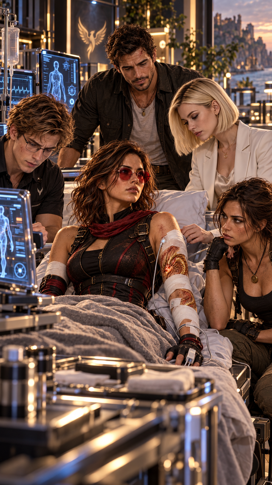
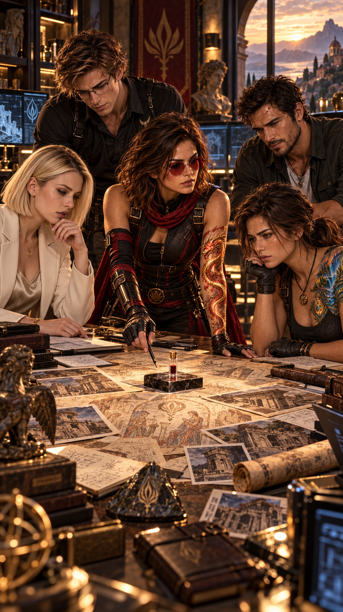
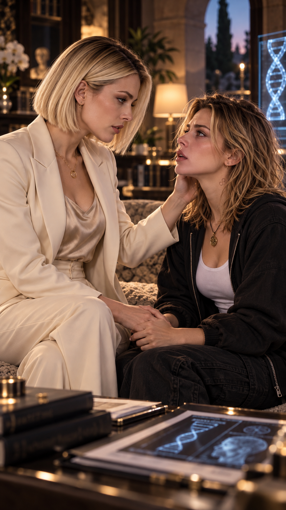
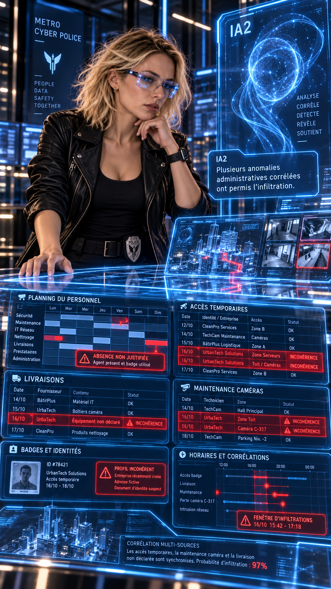
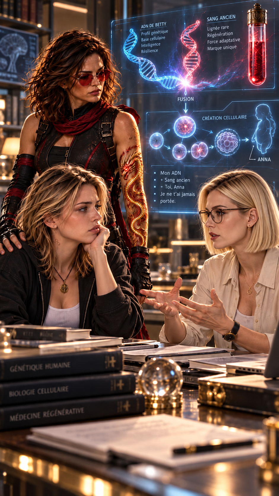
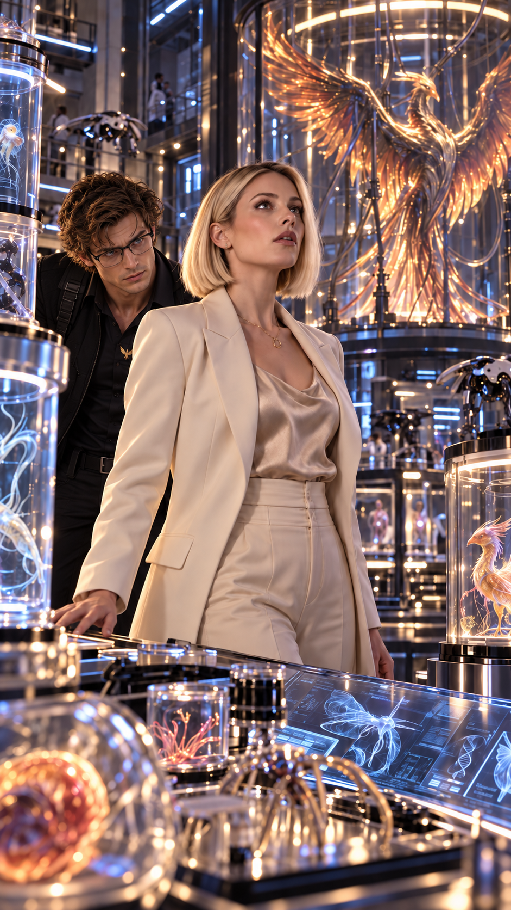

Hacienda Awake
Le véhicule franchit enfin les grilles de l’hacienda.
Anna est la première à sortir.
Elle aperçoit Hope.
Pendant une seconde, elle reste immobile.
Comme si elle avait besoin de vérifier qu’elle ne rêvait pas.
Puis elle court.
— Hope !
Hope n’a pas le temps de réagir.
Anna se jette dans ses bras.
Hope grimace sous la douleur, mais referme immédiatement les siens autour d’elle.
— Doucement…
Anna recule.
— Tu es blessée ?
— Un peu.
— « Un peu » comment ?
Peter intervient derrière elles :
— Dans son langage, ça signifie généralement suffisamment pour qu’un être humain normalement constitué soit à l’hôpital.
Hope le regarde.
— Merci.
Anna ne sourit même pas.
Elle fixe Hope.
— J’ai cru que tu étais morte.
Cette fois, Hope ne trouve pas de plaisanterie.
Elle pose simplement une main sur sa joue.
— Moi aussi, pendant quelques secondes.
Anna la regarde, horrifiée.
Hope sourit.
— Mais visiblement, j’ai encore quelques petites choses à faire.
Anna la serre de nouveau contre elle.
Betty observe la scène quelques mètres plus loin.
Et Hope le remarque.
Le regard de la généticienne.
L’inquiétude.
Le soulagement.
Mais aussi autre chose.
La peur.
Pas celle de perdre Hope.
Une autre.
Hope pense immédiatement aux fresques.
À la fiole.
À Anna.

Peter installe Hope dans une pièce médicale de l’hacienda.
— Assieds-toi.
— Je vais très bien.
— Assieds-toi.
— Peter…
— Hope.
Elle soupire.
Puis obéit.
Root entre derrière eux.
— Il faut vraiment encadrer ce moment.
Hope la regarde.
— Lequel ?
— Celui où tu obéis à quelqu’un.
Peter prépare plusieurs capteurs.
— Je vais aussi l’enregistrer.
— Vous êtes insupportables.
Max entre à son tour.
— Tout est revenu à la normale, donc.
Hope sourit.
Puis son regard se pose de nouveau sur Betty.
— Pas tout à fait.
La pièce devient soudain plus silencieuse.
Betty comprend immédiatement.
Hope retire les capteurs que Peter vient à peine de lui poser.
— Hé !
— Plus tard.
Peter ouvre la bouche.
Hope le regarde.
— Peter.
Il comprend au ton qu’il vaut mieux ne pas insister.
Hope se tourne vers Betty.
— On doit parler.
Anna, encore présente, regarde alternativement les deux femmes.
— De quoi ?
Betty répond immédiatement :
— D’une vieille histoire.
Hope ne la quitte pas des yeux.
— Très vieille.
Root comprend elle aussi.
Max perd son sourire.
Peter s’immobilise.
Anna fronce les sourcils.
— Pourquoi j’ai l’impression que cette « vieille histoire » me concerne ?
Personne ne répond.
Anna regarde sa mère.
— Maman ?
Betty inspire lentement.
— Pas ici.
Hope acquiesce.
— D’accord.
— Mais maintenant.

Quelques minutes plus tard, ils se retrouvent dans le bureau privé d’Hope.
Betty.
Hope.
Root.
Peter.
Max.
Anna.
La porte se referme.
Anna s’assoit.
— Je sens que je vais détester cette conversation.
Max lui répond doucement :
— Probablement.
Betty lui lance un regard.
— Merci beaucoup, Max.
— Je préfère éviter de lui mentir.
Hope approuve.
— Moi aussi.
Betty croise les bras.
— Très bien.
Elle regarde Hope.
— Qu’est-ce que tu as trouvé ?
Hope reste quelques secondes silencieuse.
Puis :
— Une salle.
— Sous la montagne.
— Derrière un passage qui ne pouvait s’ouvrir qu’avec mes marques.
Root intervient :
— Dragon et Phénix ?
— Oui.
Peter se penche légèrement.
— Donc le Phénix était nécessaire.
— Apparemment.
Hope poursuit :
— Il y avait des fresques.
— Très anciennes.
— Peut-être plus anciennes que tout ce que nous connaissons.
Root se redresse.
— Des Anciens ?
Hope la regarde.
— Probablement.
Puis elle se tourne vers Betty.
— Et il y avait une fiole.
Le visage de Betty se ferme.
Anna le remarque.
Hope poursuit :
— Pas une fiole représentée comme un objet quelconque.
— Comme quelque chose laissé volontairement.
— Du sang.
Silence.
Anna regarde sa mère.
— Quel sang ?
Betty ne répond pas.
Hope continue :
— Les fresques semblaient raconter qu’un fragment du patrimoine des Anciens avait été conservé.
— Dans l’attente qu’un jour, les habitants de notre monde soient suffisamment avancés pour l’utiliser.
Peter se fige.
Root murmure :
— La fiole…
Hope acquiesce.
Puis elle regarde Betty.
— Celle que Root t’a donnée.
Anna tourne brutalement la tête vers sa mère.
— Quelle fiole ?
Betty ferme les yeux un instant.
Hope reprend :
— Root l’a trouvée.
— Elle te l’a confiée.
— Et tu l’as étudiée.
Betty ouvre les yeux.
— Oui.
Hope ne la lâche pas.
— Et tu ne t’es pas contentée de l’étudier.
Silence.
Peter regarde Betty.
Max ne dit plus rien.
Anna commence à comprendre qu’il se passe quelque chose d’énorme.
— Maman ?
Betty regarde sa fille.
Et, pour la première fois, elle semble réellement ne pas savoir quoi répondre.
Hacienda Flores
Au même moment, Lucy observe un mur entier d’écrans.
Hale se tient derrière elle.
Clive, lui, est assis sur le bureau.
Lucy se retourne.
— Descends.
— Pourquoi ?
— Parce que c’est un bureau.
— Très bonne analyse.
— Clive.
Il descend.
Hale ne prête même pas attention à eux.
Son regard reste fixé sur les relevés d’accès.
— Ils connaissaient les angles morts.
Lucy acquiesce.
— Oui.
— Les rotations des équipes.
— Oui.
— L’emplacement des chambres.
— Oui.
— Les procédures de confinement.
Lucy tourne légèrement la tête.
— Et les temps de réponse.
Hale serre les mâchoires.
— Quelqu’un leur a donné tout ça.
Clive intervient :
— Peut-être.
Hale le regarde.
— « Peut-être » ?
Clive prend un stylo.
— Vous partez tous les deux du principe que quelqu’un leur a remis un dossier intitulé : « Comment pénétrer chez les Flores sans se faire tuer ».
Lucy croise les bras.
— Tu as mieux ?
Clive sourit.
— Évidemment.
Il dessine rapidement un rectangle sur une feuille.
— Si je veux cambrioler une propriété comme celle-ci, je peux faire deux choses.
Il trace une croix.
— Première solution : attaquer la sécurité.
Puis une deuxième ligne.
— Mauvaise idée.
Il regarde Hale.
— Trop de capteurs.
— Trop de contrôles.
— Trop de gens armés.
Hale ne répond pas.
— Deuxième solution…
Clive dessine une porte.
— Je ne force rien.
Lucy comprend avant Hale.
— Tu attends que la porte soit ouverte.
Clive pointe son stylo vers elle.
— Exactement.
Hale fronce les sourcils.
— Quelle porte ?
— Pas forcément une porte physique.
Clive poursuit :
— Une livraison.
— Une maintenance.
— Un changement d’équipe.
— Un prestataire.
— Un problème technique.
Il regarde Lucy.
— Vous cherchez quelqu’un capable de pirater votre sécurité.
— Moi, je chercherais quelqu’un capable de modifier votre organisation.
Silence.
Lucy se retourne immédiatement vers IA2.
— Analyse toutes les modifications administratives des trois mois précédant l’attaque.
Hale intervient :
— Trois mois ?
Clive secoue la tête.
— Trop court.
Lucy le regarde.
— Combien ?
— Un an.
Hale ajoute :
— Trois ans.
Clive sourit.
— J’aime son optimisme.
Lucy soupire.
— IA2, trois ans.
Les données apparaissent.
Plannings.
Maintenances.
Absences.
Remplacements.
Livraisons.
Accès temporaires.
Badges créés.
Badges annulés.
Des milliers d’événements.
Lucy murmure :
— Trouve les anomalies.
IA2 commence à filtrer.

Hacienda Awake
Betty s’est levée.
Elle marche lentement dans la pièce.
Anna la suit du regard.
— Maman…
Betty s’arrête.
— Tu te souviens de ce que je t’ai toujours dit ?
Anna fronce les sourcils.
— Sur quoi ?
— Sur ta naissance.
Hope reste silencieuse.
Betty poursuit :
— Que tu étais le plus beau projet de ma vie.
Anna sourit faiblement.
— Oui.
Betty ferme les yeux.
— Ce n’était pas une métaphore.
Le sourire disparaît.
Silence.
Peter baisse légèrement la tête.
Root cesse presque de respirer.
Anna ne comprend pas encore.
— Qu’est-ce que tu veux dire ?
Betty regarde sa fille.
— Je t’ai créée.
Anna rit nerveusement.
— Oui, enfin… comme toutes les mères.
Betty ne sourit pas.
Anna s’immobilise.
— Maman ?
Betty s’approche.
— Je ne t’ai jamais portée.
Anna ne bouge plus.
Hope observe son visage.
Aucune réaction pendant quelques secondes.
Puis :
— Quoi ?
— Tu n’as jamais grandi dans mon ventre.
Le silence qui suit semble interminable.
Anna regarde autour d’elle.
Comme si quelqu’un allait rire.
Comme s’il s’agissait d’une mauvaise plaisanterie.
Personne ne rit.
— Ce n’est pas drôle.
— Je sais.
— Arrête.
— Anna…
— Arrête.
Betty s’approche.
Anna recule.
— Tu m’as toujours dit que…
Elle s’arrête.
Sa voix tremble.
— Tu m’as raconté ma naissance.
— Oui.
— Tu m’as raconté que tu avais eu peur.
— Oui.
— Que j’étais arrivée plus tôt que prévu.
Betty baisse les yeux.
— Je sais.
Anna comprend.
— Tu m’as menti.
— Toute ma vie.
— Je t’ai protégée.
— EN ME MENTANT ?
Hope intervient doucement.
— Anna…
— Non !
Elle se tourne vers Hope.
— Toi aussi, tu savais ?
— Non.
Anna regarde Root.
— Et toi ?
Root secoue immédiatement la tête.
— Je savais que j’avais donné la fiole à ta mère.
— Je ne savais pas ce qu’elle en avait fait.
Anna revient vers Betty.
— Alors quoi ?
Elle tremble.
— Je suis quoi ?
Betty s’approche de nouveau.
— Tu es ma fille.
— Ce n’est pas ce que j’ai demandé.
Silence.
Hope intervient.
— Et personne ici n’a encore la réponse complète.
Anna la regarde.
Hope poursuit :
— Mais je crois que ta mère doit maintenant tout raconter.
Betty ferme les yeux.
Puis acquiesce.
— Oui.

Hacienda Flores
IA2 affiche une première anomalie.
Lucy s’approche.
— Maintenance caméra, secteur nord.
Hale regarde la date.
— Deux jours avant l’attaque.
Clive demande :
— Normal ?
— Oui.
Hale vérifie.
Puis se reprend.
— Non.
Lucy le regarde.
— Pourquoi ?
— Cette maintenance devait avoir lieu la semaine suivante.
— Qui l’a avancée ?
IA2 affiche le nom.
Coordination interne.
Lucy fronce les sourcils.
— Aucun nom ?
Hale réfléchit.
— Le service coordination peut modifier certains rendez-vous sans validation sécurité.
Clive sourit.
— Une porte ouverte.
Lucy poursuit.
— IA2, qui possède cet accès ?
Plusieurs noms apparaissent.
Sept personnes.
Clive regarde la liste.
— Trop facile.
Hale acquiesce.
— Continue.
Autre anomalie.
Un remplacement de garde.
Puis une livraison déplacée.
Puis une modification d’horaire.
Toujours autour de moments importants concernant Anna.
Lucy commence à voir le schéma.
— IA2.
— Compare toutes ces modifications avec les déplacements d’Anna.
Les résultats apparaissent.
Clive cesse de sourire.
— Ah.
Hale s’approche.
— Quoi ?
Lucy agrandit l’écran.
Chaque fois qu’Anna changeait exceptionnellement d’horaire…
une modification administrative avait lieu dans les vingt-quatre heures.
Pas systématiquement.
Mais suffisamment souvent.
Lucy murmure : — Quelqu’un suivait ses habitudes.
Hale serre les mâchoires.
— Depuis combien de temps ?
IA2 répond :
ANALYSE ÉTENDUE REQUISE.
Lucy regarde Hale.
— Jusqu’où tu veux remonter ?
Hale répond immédiatement :
— Jusqu’au début.

Hacienda Awake
Betty reprend lentement.
— Lorsque Root m’a donné la fiole, j’ai d’abord pensé qu’elle contenait un simple échantillon biologique ancien.
Root acquiesce.
— C’était aussi mon hypothèse.
— J’ai commencé par le dater.
— Puis je l’ai analysé.
Peter écoute attentivement.
Betty poursuit :
— Et rien ne correspondait vraiment.
— Humain ? demande Max.
Betty hésite.
— En partie.
Hope se redresse.
— En partie ?
— Certains marqueurs étaient compatibles avec notre espèce.
— D’autres…
Betty cherche ses mots.
— semblaient impossibles.
Anna la regarde.
— Et tu as décidé de faire quoi ?
Betty reste silencieuse.
Puis :
— De comprendre.
Hope murmure :
— Jusqu’où ?
Betty regarde Anna.
— Trop loin.
Anna pâlit.
Betty poursuit :
— J’ai utilisé mon propre matériel génétique comme base.
Peter ferme les yeux.
Il comprend avant Anna.
Betty ajoute :
— Et j’y ai intégré une quantité extrêmement faible de matériel provenant de la fiole.
Anna recule encore.
— Tu m’as fabriquée.
— Anna…
— Tu m’as fabriquée !
— C’est exactement pareil !
Betty secoue la tête.
— Non.
Sa voix se brise pour la première fois.
— Parce que ce qui est arrivé ensuite… ce n’était plus une expérience.
Elle regarde sa fille.
— Quand ton développement a commencé, je n’ai plus vu un protocole.
— Ni une réussite scientifique.
— Ni un sujet d’étude.
Elle s’approche doucement.
— J’ai vu ma fille.
Anna détourne les yeux.
Hacienda Flores
IA2 fouille les archives.
Cinq ans.
Sept ans.
Dix ans.
Les premiers résultats commencent à apparaître.
Lucy fronce les sourcils.
— Hale…
Il s’approche.
Une modification de planning.
Ancienne.
Très ancienne.
Un accès prestataire déplacé.
Puis un autre.
Toujours autour d’événements concernant Anna.
École.
Médecin.
Déplacements familiaux.
Clive regarde l’écran.
— Depuis combien de temps cette propriété conserve-t-elle ses archives ?
— Toutes, répond Hale.
Lucy se tourne vers lui.
— Toutes ?
— Depuis que Betty a acheté l’hacienda.
IA2 poursuit.
Puis un nom revient.
Une première fois.
Puis une deuxième.
Puis une troisième.
Toujours dans la chaîne de validation.
ISABEL ORTEGA.
Hale se fige.
Lucy le remarque.
— Tu la connais.
Ce n’est pas une question.
— Depuis des années.
— Quel poste ?
— Coordination interne.
Clive regarde Lucy.
Puis Hale.
— Celle qui peut déplacer une maintenance sans que personne trouve ça bizarre.
Hale secoue la tête.
— Non.
Lucy reste calme.
— Hale…
— Non.
— Elle travaille ici depuis avant qu’Anna sache lire.
Clive répond doucement :
— Justement.
Hale se tourne brutalement vers lui.
Clive lève les mains.
— Je ne dis pas qu’elle est coupable.
— Je dis qu’elle mérite qu’on regarde.
Lucy acquiesce.
— IA2, analyse toutes les actions d’Isabel Ortega liées directement ou indirectement à Anna Flores.
Quelques secondes passent.
Puis :
RÉSULTATS : 1 846 ÉVÉNEMENTS POTENTIELLEMENT PERTINENTS.
Silence.
Clive murmure :
— Ça fait beaucoup.
Hale ne répond pas.
Hacienda Awake
Anna est désormais assise.
Elle ne regarde plus personne.
Betty reste quelques mètres devant elle.
— Pourquoi ? demande Anna.
Betty ne comprend pas.
— Pourquoi moi ?
— Je ne savais pas que ce serait toi.
Anna relève les yeux.
— Quoi ?
— Au début…
Betty hésite.
— je voulais savoir si c’était possible.
Hope l’observe attentivement.
— Créer une vie viable avec ce matériel ?
Betty acquiesce.
— Oui.
Anna murmure :
— Donc j’étais une expérience.
— Au commencement.
Betty ne fuit pas.
— Oui.
La réponse fait mal.
Mais elle est honnête.
Betty ajoute :
— Puis tu as existé.
— Et à partir de ce moment-là, tout a changé.
Anna regarde sa mère.
— Pourquoi m’avoir menti ?
— Parce que j’avais peur.
— De quoi ?
— Que quelqu’un découvre ce que j’avais fait.
— Que Root me demande des comptes.
Root intervient :
— J’en aurais probablement demandé.
Betty poursuit :
— Que les gouvernements s’intéressent à toi.
— Que d’autres scientifiques veuillent t’étudier.
— Que tu deviennes une découverte avant d’être une personne.
Anna ne répond pas.
Betty murmure :
— Et surtout…
— j’avais peur que tu me regardes un jour comme tu me regardes maintenant.
Silence.
Hope baisse légèrement les yeux.
Hacienda Flores
Lucy et Clive travaillent désormais depuis près d’une heure sur Isabel.
Hale reste debout.
Presque immobile.
— Rien de directement incriminant, dit Lucy.
Clive répond :
— Ce qui est presque incriminant en soi.
Lucy le regarde.
— Explique.
— Onze ans dans un poste pareil.
— Mille huit cents événements liés à Anna.
— Et pas une seule erreur manifeste.
Il sourit sans humour.
— Personne n’est aussi propre.
Hale intervient :
— Isabel est méticuleuse.
— C’est son travail.
Clive le regarde.
— Hale.
— Tu veux la vérité ?
— Oui.
— Tu ne défends pas son dossier.
— Tu défends quelqu’un que tu connais.
Hale ne répond pas.
Lucy reprend :
— IA2, cherche les fichiers supprimés depuis ses postes de travail.
AUTORISATION ?
Lucy regarde Hale.
— C’est ton réseau.
Il hésite.
Puis :
— Autorisé.
La recherche commence.
Quelques secondes.
Puis une récupération apparaît.
Un fichier apparemment banal.
Inventaire linge — archive 17.
Clive éclate de rire.
— Sérieusement ?
Lucy ouvre.
Une liste de draps.
Serviettes.
Quantités.
Rien.
Puis IA2 signale :
DONNÉES CACHÉES DÉTECTÉES.
Hale se rapproche.
Lucy extrait la couche invisible.
Des suites de chiffres apparaissent.
Dates.
Heures.
Déplacements.
Initiales.
A.F.
Hale ne bouge plus.
Lucy décode progressivement.
A.F. — école — départ 07:32.
A.F. — retour 17:46.
A.F. — consultation médicale.
A.F. — entraînement natation.
Clive cesse totalement de plaisanter.
Lucy murmure :
— Ce ne sont pas des informations de sécurité.
Hale répond :
— Non. Ce sont des rapports de surveillance.
Lucy fait défiler.
Encore.
Encore.
Puis elle s’arrête.
Une date apparaît.
Hale la fixe.
Douze ans plus tôt.
Clive regarde Hale.
Personne ne parle.
Lucy ouvre le fichier correspondant.
Quelques lignes.
SUJET A.F. — âge : 7 ans.
Capacité d’apprentissage supérieure aux autres enfants du même groupe.
Mémoire inhabituelle.
Réaction rapide face à une situation imprévue.
Continuer l’observation.
Hale devient livide.
Lucy murmure :
— Sept ans…
Clive regarde l’écran.
— Quelqu’un observait déjà Anna à sept ans.
Hale secoue lentement la tête.
Puis une autre ligne apparaît.
Rapport transmis. Réception confirmée.
Lucy s’approche.
— À qui ?
IA2 analyse l’identifiant.
Puis :
DESTINATAIRE INCONNU.
Clive soupire.
— Évidemment.
Hale fixe toujours la date.
Puis le nom du compte ayant créé le fichier.
I. ORTEGA.
Cette fois, il ne peut plus nier.
Hacienda Awake
Hope s’approche doucement d’Anna.
— Je peux te dire quelque chose ?
Anna hausse légèrement les épaules.
Hope s’assoit en face d’elle.
— Ce que ta mère vient de t’apprendre change ton histoire.
Anna garde les yeux baissés.
— Ça change tout.
— Non.
Anna relève les yeux.
Hope poursuit :
— Ça change ton origine.
— Pas tout ce que tu es devenue depuis.
Anna reste silencieuse.
Hope ajoute :
— Ton humour.
— Tes choix.
— Tes colères.
— Ce que tu aimes.
— Ce que tu refuses.
— Tout ça n’était pas dans une fiole.
Betty ferme brièvement les yeux.
Anna regarde Hope.
— Et ce que tu as découvert dans la grotte ?
Hope hésite.
— Ça…
Elle regarde Betty.
Puis Anna.
— pourrait changer encore davantage ce que nous croyons savoir.
Anna se raidit.
Hope ajoute immédiatement :
— Mais je refuse de te dire que tu es quelque chose tant que nous n’avons pas de preuves.
Peter approuve d’un mouvement de tête.
— Enfin quelqu’un de raisonnable.
Hope lui lance un regard.
— Profite.
Root intervient :
— Qu’est-ce que les fresques disaient exactement ?
Hope réfléchit.
Puis :
— Qu’un jour, le sang des Anciens pourrait rencontrer le nôtre.
— Et que de cette rencontre…
l’Équilibre pourrait renaître parmi nous.
Personne ne parle.
Anna finit par murmurer :
— L’Équilibre.
Hope acquiesce.
— Peut-être. Mais « peut-être » est important.
Anna regarde sa mère.
Puis Hope.
— Donc vous pensez que c’est moi.
Hope répond :
— Je pense que nous devons comprendre ce que tu es sans jamais oublier qui tu es.
Anna ferme les yeux quelques secondes.
Puis :
— J’ai besoin de temps.
Betty acquiesce immédiatement.
— Bien sûr.
Anna se lève.
Elle s’arrête près de la porte.
Puis regarde sa mère.
— Je t’aime toujours.
Betty retient presque sa respiration.
Anna ajoute :
— Mais là…
Sa voix tremble.
— je suis vraiment en colère contre toi.
Elle quitte la pièce.
Betty baisse la tête.
Hope la regarde.
— Elle reviendra.
— Tu n’en sais rien.
— Non.
Hope sourit légèrement.
— Mais je commence à la connaître.
Le téléphone d’Hope vibre.
Lucy.
Elle décroche.
— Oui ?
Le visage de Lucy apparaît.
Pas de plaisanterie.
Pas de sourire.
Hope comprend immédiatement.
— Qu’est-ce qu’il se passe ?
Lucy regarde quelqu’un hors champ.
Puis revient vers elle.
— On a trouvé la taupe.
Hope se redresse.
Betty lève la tête.
Root s’approche.
— Qui ?
Lucy hésite.
— Isabel Ortega.
Betty devient blanche.
— Isabel ?
Hope observe sa réaction.
— Tu la connais ?
Betty répond :
— Elle travaille pour moi depuis plus de dix ans.
Lucy poursuit :
— Ce n’est pas le pire.
Silence.
— Elle ne surveille pas Anna depuis l’attaque.
— Ni depuis l’arrivée d’Hope.
— Ni même depuis quelques années.
Hale apparaît derrière Lucy.
Son visage est fermé.
— On a retrouvé des rapports.
Betty murmure :
— Depuis quand ?
— Anna avait sept ans.
Personne ne parle.
Puis Lucy ajoute :
— Et ça, c’est seulement le plus ancien rapport qu’on a retrouvé pour l’instant.
Hope se fige.
Root la regarde.
Une même pensée vient de les traverser.
Si quelqu’un surveillait déjà Anna à sept ans…
alors quelqu’un savait.
Bien avant eux.
Bien avant Hope.
Peut-être même…
bien avant qu’Anna elle-même ne puisse comprendre ce qu’elle était.
Hope murmure :
— Betty…
La généticienne la regarde.
Hope pose la seule question qui compte désormais.
— Qui d’autre savait ce que tu avais fait ?
Betty ouvre la bouche.
Puis s’arrête.
Et cette fois, son silence inquiète Hope bien davantage que n’importe quelle réponse.
Betty se tient seule sur la terrasse de l’hacienda Awake.
Depuis qu’Anna a quitté la pièce, elle n’a presque pas parlé.
Peter finit par la rejoindre.
Il s’arrête à quelques pas.
— Tu veux être seule ?
Betty hausse légèrement les épaules.
— Je ne sais pas.
Peter s’approche.
— Alors je vais rester à une distance socialement acceptable jusqu’à ce que tu décides.
Betty laisse échapper un sourire fatigué.
— C’est censé me consoler ?
— Non.
Il s’assoit près d’elle.
— Je suis très mauvais pour ça.
Un silence.
Puis Peter reprend :
— Pour ce que ça vaut… je pense qu’Anna reviendra vers toi.
Betty baisse les yeux.
— Elle vient d’apprendre que toute sa naissance était un mensonge.
— Oui.
— J’ai passé dix-neuf ans à redouter ce moment.
Peter la regarde.
— Et malgré ça, tu as fini par lui dire la vérité.
— Parce qu’Hope m’a coincée.
— Je préfère la version héroïque.
Betty sourit de nouveau.
Puis Peter devient plus sérieux.
— Tu sais que j’ai des sentiments pour toi.
Betty tourne lentement la tête vers lui.
— Peter…
— Non, attends.
Il lève une main.
— Je ne suis pas en train de profiter du fait que tu sois vulnérable.
Betty arque un sourcil.
— Dommage. Pendant deux secondes, j’ai cru que tu allais enfin tenter quelque chose.
Peter reste bouche entrouverte.
Betty esquisse un sourire.
— Continue.
Peter reprend difficilement :
— Très bien.
Il inspire.
— Si tu as besoin de quoi que ce soit, je serai là.
— Merci.
— Mais…
Betty ferme les yeux.
— Il y a toujours un “mais”.
— Celui-là est important.
Elle le regarde.
Peter hésite.
— Je dois t’avouer quelque chose.
— Ça commence mal.
— Oui.
— Très mal ?
— Ça dépend à quel point tu tiens à tes recherches.
Betty se redresse.
— Peter.
— Voilà.
Il joint ses mains.
— Techniquement…
— Je t’ai fait des enfants dans le dos.
Silence.
Betty le fixe.
— Pardon ?
Peter grimace.
— Dit comme ça, c’est pire que dans ma tête.
Betty ne cligne même plus des yeux.
— Explique.
Peter tend lentement le bras.
Un sifflement traverse le jardin.
Quelques secondes plus tard, une grande silhouette ailée descend entre les arbres.
Le Phénix se pose sur la rambarde.
Betty le regarde.
Puis regarde Peter.
Puis de nouveau l’oiseau.
— Non.
Peter sourit nerveusement.
— Si.
Le Phénix incline la tête vers Betty.
Peter poursuit :
— Une partie de son architecture biologique vient de travaux que tu avais développés sur l’adaptation cellulaire, la régénération ciblée et la stabilisation des mutations.
Le visage de Betty change.
— Tu as volé mes recherches.
— “Volé” est un mot très agressif.
— Peter.
— Oui.
Il soupire.
— J’ai volé tes recherches.
Betty reste silencieuse.
Peter poursuit :
— Pas toutes.
— Une partie.
— Et je les ai combinées avec les miennes.
— Le Phénix est le résultat le plus spectaculaire.
Betty observe l’animal.
— Le plus spectaculaire ?
Peter évite son regard.
— Il y en a d’autres.
Betty ferme les yeux.
— Combien ?
— Ça dépend de ce que tu considères comme un enfant.
Elle rouvre immédiatement les yeux.
— Peter.
— Des systèmes bio-inspirés.
— Des microtraceurs.
— Des organismes expérimentaux de surveillance.
— Rien qui puisse se reproduire tout seul.
— Enfin…
Betty le fixe.
Peter corrige immédiatement :
— Rien qui soit censé se reproduire tout seul.
Betty inspire très lentement.
— Tu viens vraiment de choisir ce moment pour me raconter ça ?
— Oui.
— Pourquoi ?
Peter perd son sourire.
— Parce que tu viens d’avouer à ta fille que tu as franchi une limite scientifique il y a dix-neuf ans.
Il regarde le Phénix.
— Et je me suis dit que j’étais peut-être mal placé pour jouer les hommes irréprochables.
Betty ne dit rien.
Peter poursuit :
— J’aurais dû te demander.
— J’aurais dû te montrer ce que je faisais.
— Et j’aurais surtout dû te laisser décider si tu voulais que tes travaux servent à ça.
Betty regarde longuement le Phénix.
L’animal déploie légèrement ses ailes.
— Il est magnifique.
Peter sourit.
— Je sais.
Betty tourne immédiatement la tête.
— Ce n’était pas un compliment pour toi.
— Je prends ce que je peux.
Elle l’observe encore quelques secondes.
Puis :
— Je suis furieuse contre toi.
— Normal.
— Je vais vouloir voir absolument tous les dossiers.
— Normal.
— Toutes les expériences.
— D’accord.
— Tous les prototypes.
Peter hésite.
Betty plisse les yeux.
— Peter.
— Tous les prototypes.
Betty désigne le Phénix.
— Et ça…
— Oui ?
— Tu ne touches plus à une seule de mes recherches sans mon autorisation.
Peter acquiesce.
— Marché conclu.
Betty se tourne vers lui.
— Et ne crois pas que parce que je ne t’ai pas encore frappé, tu es pardonné.
Peter sourit.
— Donc il reste une chance.
— Une chance de quoi ?
— Que tu me pardonnes.
Betty le regarde.
Peter ajoute :
— Pour le reste, je peux attendre.
Cette fois, Betty comprend très bien ce qu’il veut dire.
Elle ne répond pas.
Mais elle ne s’éloigne pas non plus.
Betty regarde encore le Phénix perché sur la rambarde.
L’animal incline légèrement la tête.
Ses plumes semblent parfaitement naturelles.
Pourtant, dans son regard, quelque chose trahit une intelligence inhabituelle.
Betty se tourne lentement vers Peter.
— Quand tu as dit qu’il y en avait d’autres…
Peter grimace.
— Oui.
— Combien ?
— Tu veux vraiment savoir ?
— Peter.
Il soupire.
— Viens.
Betty ne bouge pas.
— Où ?
— Je vais tout te montrer.
— Ici ?
— Non.
Peter regarde autour de lui.
Puis ajoute :
— Hope m’a prêté une partie de son laboratoire.
Betty arque un sourcil.
— Hope t’a laissé installer un laboratoire expérimental dans son hacienda ?
— « Laissé » est un grand mot.
— Peter.
— Elle m’a donné une pièce.
— Puis j’en ai utilisé une deuxième.
— Et après…
Betty ferme les yeux.
— Combien ?
— Quatre.
Elle le fixe.
— Quatre pièces ?
— Dont une petite.
Betty secoue la tête.
— Montre-moi.

Ils traversent une partie de l’hacienda qu’elle connaît peu.
Peter ouvre une porte dissimulée derrière une bibliothèque.
Betty s’arrête.
— Sérieusement ?
— C’était déjà là.
— Bien sûr.
Un escalier descend sous le bâtiment.
Au bas des marches, Peter pose sa main sur un lecteur biométrique.
Une lumière passe sur son visage.
La porte s’ouvre.
Betty entre.
Puis s’immobilise.
— Oh…
Devant elle s’étend un laboratoire beaucoup plus grand qu’elle ne l’imaginait.
Des parois vitrées.
Des modules de culture.
Des établis.
Des écrans.
Des terrariums.
Des nichoirs artificiels.
De petites zones végétalisées.
Et surtout…
du mouvement.
Betty tourne lentement sur elle-même.
— Peter…
— Oui ?
— Qu’est-ce que tu as fait ?
— Je préfère « créé ».
Betty lui lance un regard.
— Mauvais moment pour jouer sur les mots.
Peter acquiesce.
— D’accord.
Il désigne la pièce.
— Bienvenue dans ce qu’Hope appelle…
Il hésite.
— Mon zoo illégal.
Betty sourit malgré elle.
— J’aime de plus en plus Hope.
— Elle a aussi utilisé « nid à problèmes ».
— Là encore, elle marque un point.
Le Phénix les rejoint.
Il traverse l’ouverture et se pose sur une structure métallique au centre du laboratoire.
Peter lève le bras.
L’oiseau vient immédiatement s’y poser.
— Lui, tu le connais.
Betty s’approche.
— À peine.
Peter caresse doucement son poitrail.
— Architecture biologique adaptable.
— Tissus renforcés.
— Capacité de récupération supérieure à celle d’un oiseau normal.
— Interface neuronale avec plusieurs systèmes de communication.
Betty l’interrompt.
— Et quelle part vient de moi ?
Peter hésite.
— Beaucoup.
Elle ferme les yeux.
— Magnifique.
— Je savais que tu…
— Je ne parlais pas de toi.
— Oui, tu me l’as déjà dit.
Betty observe le Phénix.
— Il est vraiment vivant ?
Peter devient sérieux.
— Oui.
— Pas une machine recouverte de tissu biologique ?
— Non.
— Il pense ?
— À son niveau.
— Il apprend.
— Il reconnaît les gens.
— Il peut développer des préférences.
Betty regarde l’animal.
Le Phénix incline la tête vers elle.
— Et il peut refuser un ordre ?
Peter sourit.
— Malheureusement.
— Donc tu as volontairement créé quelque chose capable de te désobéir.
— Je considère ça comme une sécurité.
Betty se tourne vers lui.
— Pour une fois, je suis d’accord avec toi.
Un mouvement attire son attention près du sol.
Quelque chose de minuscule disparaît derrière une table.
Betty pointe du doigt.
— C’était quoi ?
Peter hésite.
— Rien.
— Peter.
— D’accord.
Il siffle doucement.
Quelques secondes plus tard, plusieurs petits insectes apparaissent.
Betty s’approche.
— Des puces ?
Peter sourit.
— Enfin quelqu’un qui apprécie mon travail.
— J’ai dit « des puces ».
— Techniquement, elles s’en inspirent.
Betty se penche.
Les créatures sont minuscules.
À peine visibles.
— Ce sont elles que tu as utilisées sur la voiture d’Élie ?
Peter se fige.
Betty tourne très lentement la tête.
— Peter.
— Certaines.
— Tu as mis des organismes expérimentaux sur la voiture d’un chef de cartel ?
— Dit comme ça…
— Il n’existe aucune façon correcte de le dire.
Peter hausse les épaules.
— Elles ne mordent pas.
— Ça me rassure énormément.
— Elles se fixent sur une surface, récupèrent quelques données environnementales et peuvent relayer une position pendant un temps limité.
Betty les observe.
— Combien de temps ?
— Quelques heures.
— Parfois davantage.
— Elles meurent ensuite ?
Peter acquiesce.
— Ou se désactivent.
— Pas de reproduction autonome.
Betty le regarde sévèrement.
— Cette fois, tu es sûr ?
— Absolument.
— Très bien.
Elle marque une pause.
— J’aimerais les étudier.
Peter sourit.
— Je savais que tu les aimerais.
— Ne prends pas ça pour un pardon.
— Jamais.
Peter continue.
— Maintenant…
Il ouvre un autre compartiment.
Une petite créature ailée en sort.
Betty recule légèrement.
— C’est quoi ?
— Une libellule.
— Ce n’est pas une libellule.
— Elle en a l’esprit.
— Peter.
— D’accord, c’est un microdrone biologique inspiré d’une libellule.
Betty soupire.
— Pour qui ?
Peter sourit.
— Lucy.
Betty éclate de rire.
— Évidemment.
— Elle peut entrer par une fenêtre, suivre une personne, enregistrer quelques minutes de données et revenir.
— Elle est invisible ?
— Non.
— Minuscule.
— Ce n’est pas pareil.
Betty acquiesce.
— Merci.
— J’apprends.
Il ouvre une autre zone.
Cette fois, une petite créature sombre sort d’un terrarium.
Elle ressemble à un lézard.
Mais ses pattes sont plus longues.
Ses mouvements presque silencieux.
Betty s’approche.
— Celui-là ?
— Root.
— Pourquoi un lézard ?
— Parce qu’il grimpe.
— Se glisse dans des fissures.
— Analyse les vibrations.
— Peut cartographier certaines cavités.
Betty regarde Peter.
— Tu as fabriqué un assistant archéologue.
— Exactement.
— Root va l’adorer.
— Ou me frapper.
— Les deux sont possibles.
Plus loin, Peter ouvre un module transparent.
Un petit animal gris saute sur une branche.
Betty sourit.
— Un écureuil ?
— Inspiré.
— Max.
Betty le regarde.
— Pourquoi Max a droit à un écureuil ?
— Mobilité.
— Mémoire spatiale.
— Capacité à transporter une microcaméra.
— Et il peut rester immobile très longtemps.
Betty éclate de rire.
— Donc tu as créé l’opposé de Max.
Peter sourit.
— Ça équilibrera.
Betty avance encore.
Puis aperçoit une dernière zone.
Elle s’arrête.
— Et celui-là ?
Peter devient plus prudent.
Dans un espace végétalisé, une petite créature sort lentement de derrière un rocher.
Fine.
Élégante.
Presque féline.
Betty s’approche.
— C’est pour Anna ?
Peter ne répond pas immédiatement.
Betty le regarde.
— Peter.
— Oui.
La petite créature observe Betty.
Puis disparaît à nouveau.
— Pourquoi ?
— Je voulais quelque chose qui ne serve pas à combattre.
— Ni à espionner.
— Ni à suivre quelqu’un.
Betty l’écoute.
— Quelque chose qui puisse apprendre avec elle.
— Observer.
— Reconnaître des environnements.
— Lui signaler un danger simple.
— Mais surtout…
Peter sourit.
— Être curieux.
Betty regarde la créature.
— Elle sait pour Anna ?
— Elle reconnaît son odeur.
— Sa voix.
— Quelques gestes.
Betty se tourne brusquement.
— Elle l’a déjà rencontrée ?
Peter grimace.
— Une fois.
— Peter !
— Elle dormait.
— Qui ?
— Anna.
Betty le fixe.
— Tu as introduit une créature expérimentale dans la chambre de ma fille pendant qu’elle dormait ?
Peter recule d’un pas.
— Présenté comme ça, je comprends que ça puisse sembler…
— Délirant ?
— Oui.
— Criminel ?
— Un peu moins.
— Peter !
Il lève les mains.
— C’était un test de reconnaissance.
— Elle est restée trente secondes.
— Hope était là.
Betty s’arrête.
— Hope était au courant ?
— Elle m’a dit exactement la même chose que toi.
— Et ensuite ?
Peter sourit.
— Elle m’a menacé de nourrir le Phénix avec mes chaussures.
Betty réfléchit.
— J’aime vraiment cette femme.
Ils continuent.
Betty remarque alors une zone vide.
Une plaque porte simplement :
H.A.
Elle la désigne.
— Hope Awake ?
Peter acquiesce.
— Où est le sien ?
— Elle l’a refusé.
Betty sourit.
— Pourquoi ça ne m’étonne pas ?
Peter prend une voix plus grave.
— « Je n’ai pas besoin d’un animal amélioré pour savoir quand quelqu’un me suit. »
Betty éclate de rire.
— Ça lui ressemble.
— J’avais pourtant fait quelque chose d’intéressant.
— Quoi ?
Peter hésite.
— Un rapace nocturne.
— Très silencieux.
— Vision thermique partielle.
— Autonomie importante.
Betty le regarde.
— Et elle a dit non ?
— Elle m’a demandé ce que je comptais faire le jour où quelqu’un piraterait mon rapace.
Betty sourit.
— Et tu as répondu ?
Peter se tait.
— Voilà.
Betty observe de nouveau le laboratoire.
Puis son expression change.
Plus sérieuse.
— Peter.
— Oui ?
— Tu comprends pourquoi tout ça me fait peur ?
Peter regarde autour de lui.
— Oui.
— Pas seulement parce que tu as utilisé mes recherches.
— Je sais.
Betty désigne le Phénix.
— Aujourd’hui, tu as créé ça avec de bonnes intentions.
— Demain, quelqu’un pourrait utiliser les mêmes travaux autrement.
Peter acquiesce.
— C’est pour ça que personne ne connaît ce laboratoire.
— Sauf Hope.
— Root en connaît une partie.
— Et maintenant toi.
Betty croise les bras.
— Et tu vas me donner un accès complet.
Peter sort immédiatement un petit dispositif.
— Déjà préparé.
Betty le regarde.
— Tu savais que j’allais accepter de t’aider ?
— Non.
— Je savais que si je te montrais tout ça, soit tu m’aiderais…
— soit tu détruirais le laboratoire.
— Dans les deux cas, autant te donner l’accès.
Betty secoue la tête.
— Tu es insupportable.
— On me le dit souvent.
Le Phénix quitte soudain son perchoir.
Il vient se poser près de Betty.
Elle tend lentement une main.
L’animal approche sa tête.
Puis accepte le contact.
Betty caresse doucement ses plumes.
Peter l’observe.
— Il t’aime bien.
— Il ne me connaît pas.
— Peut-être qu’il reconnaît quelque chose.
Betty se fige légèrement.
— Quoi ?
Peter sourit.
— Son autre mère.
Betty tourne la tête.
— Ne recommence jamais avec cette phrase.
Peter éclate de rire.
— D’accord.
Betty observe encore le Phénix.
Puis :
— Tu comptes vraiment donner ces spécimens aux autres ?
— Pas tous.
— Et jamais sans leur accord.
— Lucy pourra choisir.
— Root aussi.
— Max…
Peter sourit.
— Max ne saura probablement pas dire non.
— Et Anna ?
Peter devient plus sérieux.
— Anna décidera.
Betty acquiesce.
— Bien.
— Pas de cadeau imposé.
— Pas de compagnon destiné à la surveiller.
— Pas de système caché.
Peter la regarde.
— Promis.
Betty tend la main.
— Donne-moi tous les protocoles.
Peter hésite.
— Maintenant ?
— Tous.
— Betty…
— Tu voulais libérer ta conscience.
Elle lui adresse un sourire presque menaçant.
— Félicitations.
— Maintenant, tu vas libérer tes dossiers.
Peter soupire.
— J’aurais dû me contenter de te courtiser.
Betty s’éloigne vers les écrans.
— Tu aurais eu plus de chances.
Peter la regarde.
— « Aurais eu » ?
Betty s’arrête.
Puis tourne légèrement la tête.
— Ne gâche pas tout.
Peter sourit.
— Compris.
Derrière eux, le Phénix déploie lentement ses ailes.
Et, pour la première fois depuis que la vérité sur Anna a éclaté, Betty sourit réellement.